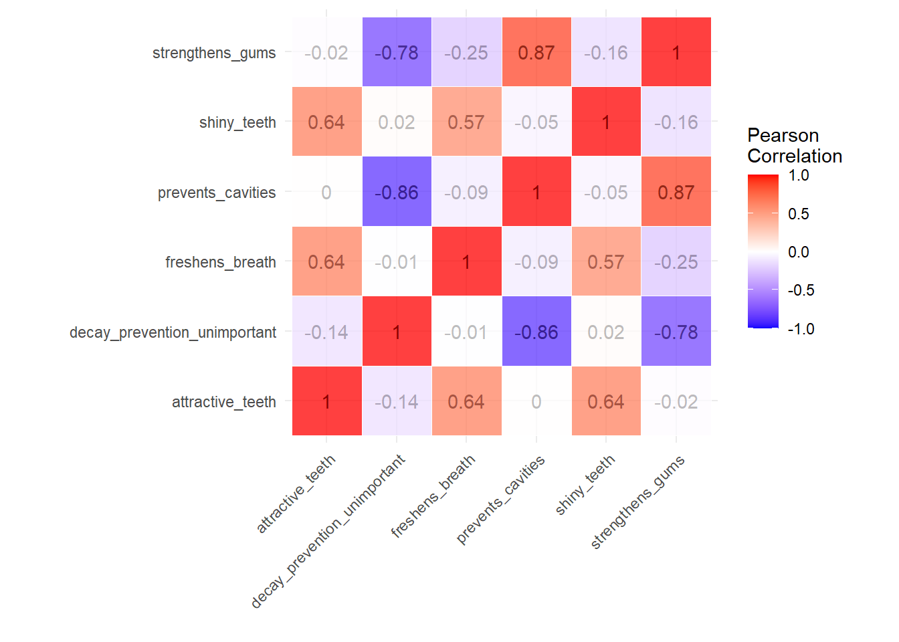
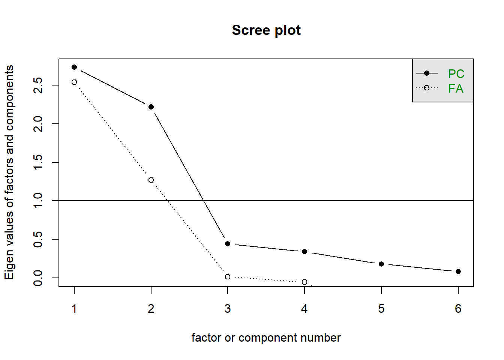

Hello everyone!
This is called an “RMarkdown” file. You can do all sorts of amazing stuff using RMarkdown, including preparing pedagogic documents/websites, showing off your work you do on R, etc. For more details on using R Markdown see http://rmarkdown.rstudio.com.
I’ll be using RMarkdown to prepare the summaries. You can skip the R sections if you are not interested. But they are much easier to get into than you’d probably think. Let us start with some preliminaries:
There are two main reasons why you would want to use factor analysis: to reduce the number of variables in your data set without using much information contained within them(for computational reasons), to find out what may be the latent, unobservable characteristics that your data set may have that could give you a bigger-picture view on the data you have (summarisation/for drawing insights) while making it easier to making sense from the chaos you have in your hands.
Your data set may allow you to indirectly get a measure on those unobservable characteristics. So you’re basically hitting two birds with one stone here. After running a factor analysis method and having factors that adequately explain the variation in your original data set, you end up having a much manageable data set with similar/correlated variables grouped together and represented by a variable that can be named arbitrarily, depending on the context.
You’ve seen the same logic at work in regression analysis. Variance means information, covariance means the degree of similarity between information carried by two variables. Covariance makes up the most basic block in factor analysis, therefore it is important to grasp what it means.
If we have variables with high correlation, then we can assume that they have some information in common. You might even say that you have some duplicate information stored by two variables that you could compress without losing much, pretty similar (but not identical to) to what Winrar, Winzip and co. do, we compress the data set while also making sure that we don’t lose much (unique) information in the process. Communality (\(h^2\)) therefore represents variance explained in a particular variable by the factors generated, whereas uniqueness (\(u^2\)) represents the variance that the factors are not able to explain, you could say “information lost” during compression. If you had as many factors as you have variables, you could perfectly explain the variance and you would have a communality value of 1 for each variable. But then it would not make any sense to use factor analysis, would it?
The resulting system of equations in matrix notation looks like the following, assume there are \(m\) observations, \(n\) variables in your data set and you have reduced your variables to \(r\) factors. This is the system we want to achieve, we want to decompose our variables in the following way:
\[ X = {\Lambda}F + {\Psi}E\]
where X is the \(n \times m\) matrix that stores all the variables we are interested in, \({\Lambda}\) represents the \(n \times r\) loading matrix, that stores the correlations between \(n\) variables and \(r\) factors. \(F\) represents \(r \times m\) matrix of extracted factors, \(\Psi\) is the \(n \times 1\) loading vector for “unique” factors, which does not appear as a factor when we run an analysis, and \(E\) represents the unique factor, or error term. This is not a formula, you won’t be able to calculate this (without having the full factor analysis results in your hands), there are numerous algorithms that do it for you, mostly using the eigenvalues of the correlation matrix of the variables in the data set. The variance is decomposed to explained/unexplained as follows:
\[ \Sigma = \Lambda'\Lambda + \Psi\]
\(\Lambda\) again represents the loading matrix and \(\Sigma\) is the covariance matrix of the data set. Our goal when running factor analysis is to minimize \(\Psi\) with the input we are given. But since all our variables are standardized, they have a variance of 1
\[ 1 = \Lambda'\Lambda + \Psi\]
which could also be denoted as the following.
\[ 1 = h^2 + u^2\]
We don’t have a model to work with in factor analysis, that makes it an unsupervised method, while it may make sense to take a look at the correlation matrix beforehand to see if it is worthwhile to run a factor analysis, we don’t have to pre-group variables, or even name factors before running. You could argue that the expression I showed above might qualify as a model, but no, that’s not what I mean. We have no notion what the factors must look like, contrary to regression where we are trying to make the combination of our explanatory variables look as much as possible like the dependent variable. In factor analysis, however, you can have a look at what the factors could look like, but have no say whatsoever on what they must look like. You can think of a dependent variable as a supervisor that you should obey, we have no dependent variables in factor analysis.
Yet it still makes sense to have some expectations, and if you don’t have any variables that can be grouped together (read: high correlation), you might have to conclude that it is not worth using factor analysis. Because even if you reduce your data set to a number of factors, if the variance explained by these factors is around 30% percent, it will not have made sense to use factor analysis.
Reminder: even if you are not interested in coding, it makes sense to read through what’s happening here. Just look at the tables/results/comments and factor analysis should start making sense, quite fast.
Let us see how easy it is to run a factor analysis. First, we’ll
include the psych package (install it first if you don’t
have it, as shown below) that gives us the factor analysis function. and
the openxlsx package that lets us import excel files into
R.
install.packages("psych") #install packages, you only need to do it once
install.packages("openxlsx")
install.packages("ggplot2") #for visualization. I strongly recommend installing and learning how to use the "tidyverse", which ggplot2 is a part of.
install.packages("tidyr") #required for visualization, not necessary for the analysisrequire(psych) #attach the package so that we can work with what it offers to us
require(openxlsx)Now to use the toothpaste data set! This version is slightly
different than what we have seen in the lecture. so we’ll get rid of the
extra columns. There are packages (e.g. dplyr) that do this
much more elegantly, but let us use the basics for now, as much as
possible.
toothpaste <- read.xlsx("https://samuelfranssens.files.wordpress.com/2022/03/toothpaste.xlsx")
toothpaste <- toothpaste[,-c(1,8,9)]Take a look at the dataset below:
| prevents_cavities | shiny_teeth | strengthens_gums | freshens_breath | decay_prevention_unimportant | attractive_teeth |
|---|---|---|---|---|---|
| 7 | 3 | 6 | 4 | 2 | 4 |
| 1 | 3 | 2 | 4 | 5 | 4 |
| 6 | 2 | 7 | 4 | 1 | 3 |
| 4 | 5 | 4 | 6 | 2 | 5 |
| 1 | 2 | 2 | 3 | 6 | 2 |
| 6 | 3 | 6 | 4 | 2 | 4 |
| 5 | 3 | 6 | 3 | 4 | 3 |
| 6 | 4 | 7 | 4 | 1 | 4 |
| 3 | 4 | 2 | 3 | 6 | 3 |
| 2 | 6 | 2 | 6 | 7 | 6 |
| 6 | 4 | 7 | 3 | 2 | 3 |
| 2 | 3 | 1 | 4 | 5 | 4 |
| 7 | 2 | 6 | 4 | 1 | 3 |
| 4 | 6 | 4 | 5 | 3 | 6 |
| 1 | 3 | 2 | 2 | 6 | 4 |
| 6 | 4 | 6 | 3 | 3 | 4 |
| 5 | 3 | 6 | 3 | 3 | 4 |
| 7 | 3 | 7 | 4 | 1 | 4 |
| 2 | 4 | 3 | 3 | 6 | 3 |
| 3 | 5 | 3 | 6 | 4 | 6 |
| 1 | 3 | 2 | 3 | 5 | 3 |
| 5 | 4 | 5 | 4 | 2 | 4 |
| 2 | 2 | 1 | 5 | 4 | 4 |
| 4 | 6 | 4 | 6 | 4 | 7 |
| 6 | 5 | 4 | 2 | 1 | 4 |
| 3 | 5 | 4 | 6 | 4 | 7 |
| 4 | 4 | 7 | 2 | 2 | 5 |
| 3 | 7 | 2 | 6 | 4 | 3 |
| 4 | 6 | 3 | 7 | 2 | 7 |
| 2 | 3 | 2 | 4 | 7 | 2 |
| 7 | 3 | 6 | 4 | 2 | 4 |
| 1 | 3 | 2 | 4 | 5 | 4 |
| 6 | 2 | 7 | 4 | 1 | 3 |
| 4 | 5 | 4 | 6 | 2 | 5 |
| 1 | 2 | 2 | 3 | 6 | 2 |
| 6 | 3 | 6 | 4 | 2 | 4 |
| 5 | 3 | 6 | 3 | 4 | 3 |
| 6 | 4 | 7 | 4 | 1 | 4 |
| 3 | 4 | 2 | 3 | 6 | 3 |
| 2 | 6 | 2 | 6 | 7 | 6 |
| 6 | 4 | 7 | 3 | 2 | 3 |
| 2 | 3 | 1 | 4 | 5 | 4 |
| 7 | 2 | 6 | 4 | 1 | 3 |
| 4 | 6 | 4 | 5 | 3 | 6 |
| 1 | 3 | 2 | 2 | 6 | 4 |
| 6 | 4 | 6 | 3 | 3 | 4 |
| 5 | 3 | 6 | 3 | 3 | 4 |
| 7 | 3 | 7 | 4 | 1 | 4 |
| 2 | 4 | 3 | 3 | 6 | 3 |
| 3 | 5 | 3 | 6 | 4 | 6 |
| 1 | 3 | 2 | 3 | 5 | 3 |
| 5 | 4 | 5 | 4 | 2 | 4 |
| 2 | 2 | 1 | 5 | 4 | 4 |
| 4 | 6 | 4 | 6 | 4 | 7 |
| 6 | 5 | 4 | 2 | 1 | 4 |
| 3 | 5 | 4 | 6 | 4 | 7 |
| 4 | 4 | 7 | 2 | 2 | 5 |
| 3 | 7 | 2 | 6 | 4 | 3 |
| 4 | 6 | 3 | 7 | 2 | 7 |
| 2 | 3 | 2 | 4 | 7 | 2 |
OK, now that we have the data set, let us take a look at the
correlations. R needs only a single function to give you the correlation
matrix! But before that, let us make sure that we standardize all the
variables in the data set. apply() is one of the ways to
implement a loop in R and it is not necessarily related to factor
analysis. What we are doing is the usual z-standardization:
\[ z = \frac{x - {\mu}_x}{{\sigma}_x}\]
toothpaste <- apply(toothpaste,MARGIN = 2, function(x) (x -mean(x))/sd(x))
cor_mat <- cor(toothpaste) #finding the correlation matrixThe following part deals with visualization and it is by no means essential, if you are into data visualization, ggplot2 is an amazing library to learn as it gives endless customization options! Don’t worry about this part, as it features some stuff necessary for visualizing the correlation matrix.
require(tidyr) #
require(ggplot2) #
cor_mat <- data.frame(cor_mat) #finding the correlation matrix
cor_mat$var1 <- rownames(cor_mat)
cor_mat <- cor_mat %>% pivot_longer(cols = prevents_cavities:attractive_teeth)
ggplot(data = cor_mat, aes(var1, name, fill = value))+
geom_tile(color = "white",alpha=0.75)+
geom_text(aes(label=round(value,2),color=value)) +
scale_fill_gradient2(low = "blue", high = "red", mid = "white",
midpoint = 0, limit = c(-1,1), space = "Lab",
name="Pearson\nCorrelation") +
scale_color_gradient2(low = "darkblue", high = "darkred", mid = "gray",
midpoint = 0, limit = c(-1,1), space = "Lab",guide = "none") +
theme_minimal()+
theme(axis.text.x = element_text(angle = 45, vjust = 1,
hjust = 1))+
coord_fixed() + labs(x="",y="")
You can see that, as discussed in the class, there is a strong
(positive or negative) correlation between the variables
strengthens_gums,decay_preventaion_unimportant
and prevents_cavities, which we can group under “health
concerns” and
attractive_teeth,freshens_breath, and
shiny_teeth under “aesthetic concerns”. This grouping is
not necessary for factor analysis, however, as I mentioned above it is
nice see whether it is worthwhile to do a factor analysis, as the
correlations are the building blocks of factor analysis. With no strong
correlation, we cannot expect to have factors that can cover the
variance in variables well enough.
Reminder: Factor analysis first calculates the
eigenvalues, loadings and communalities before actually extracting the
factors themselves. Luckily, the psych package gives us a
function to create a scree plot without extracting factors one by
one.
In the figure below, we are interested in the dashed line. Don’t get confused, algorithms for factor analysis deal with eigenvalues of modified correlation matrices at each iteration. There is an other method called Principal Component Analysis that is in some ways similar to Factor Analysis, but we are not interested in that at the moment.
Anyway, the dashed line gives us the eigenvalues we are interested in. After the second factor, the marginal explanation power of each factor dips dramatically. So, it would be wise to go with 2 factors for this dataset.
psych::scree(toothpaste) # the part before "::" is the package name, sometimes it necessary to use it to avoid naming conflicts, I used it here to demonstrate it for two reasons: 1) to show you that such functionality exists, e.g. you can call a function without including its package 2)because the built-int "stats" package has a function with the same name.
We are now ready to go through with 2 factors as our selection. Running a factor analysis, again, is very simple with R. As you can see just below. Let us first choose the no-rotation version and use that as a basis this has the assumption that factors are uncorrelated with each other (We don’t really know at the moment if that assumption has any truth to it).
Reminder: we are able to use the entire data set
inside the fa() function because we want to use all the
variables for the analysis, if we did not need all the variables then we
would have to modify the data frame to work with a subset of the
variables.
Below we have a factor analysis output. Let us investigate it. Don’t panic, we are not interested (at least immediately) everything that is written in the report.
fact_result_nr <- fa(toothpaste,nfactors = 2,rotate = "none")
fact_result_nr## Factor Analysis using method = minres
## Call: fa(r = toothpaste, nfactors = 2, rotate = "none")
## Standardized loadings (pattern matrix) based upon correlation matrix
## MR1 MR2 h2 u2 com
## prevents_cavities 0.95 0.17 0.93 0.071 1.1
## shiny_teeth -0.21 0.72 0.56 0.439 1.2
## strengthens_gums 0.91 0.04 0.84 0.164 1.0
## freshens_breath -0.25 0.73 0.60 0.401 1.2
## decay_prevention_unimportant -0.85 -0.26 0.79 0.211 1.2
## attractive_teeth -0.10 0.85 0.72 0.275 1.0
##
## MR1 MR2
## SS loadings 2.57 1.87
## Proportion Var 0.43 0.31
## Cumulative Var 0.43 0.74
## Proportion Explained 0.58 0.42
## Cumulative Proportion 0.58 1.00
##
## Mean item complexity = 1.1
## Test of the hypothesis that 2 factors are sufficient.
##
## The degrees of freedom for the null model are 15 and the objective function was 4.25 with Chi Square of 238.93
## The degrees of freedom for the model are 4 and the objective function was 0.22
##
## The root mean square of the residuals (RMSR) is 0.02
## The df corrected root mean square of the residuals is 0.05
##
## The harmonic number of observations is 60 with the empirical chi square 1.1 with prob < 0.89
## The total number of observations was 60 with Likelihood Chi Square = 11.82 with prob < 0.019
##
## Tucker Lewis Index of factoring reliability = 0.866
## RMSEA index = 0.18 and the 90 % confidence intervals are 0.067 0.306
## BIC = -4.56
## Fit based upon off diagonal values = 1
## Measures of factor score adequacy
## MR1 MR2
## Correlation of (regression) scores with factors 0.98 0.92
## Multiple R square of scores with factors 0.95 0.85
## Minimum correlation of possible factor scores 0.91 0.70The first table gives us the most vital values: loadings (MR1 and MR2), communalities (h2) and uniqueness (u2).
The second table present different measures for variance explained. The metric of interest is, “cumulative variance”. We can see here that two factors explain 74% of the total variance in the data set! Which is a great result.
Let’s talk about loadings and how central they are to a factor analysis model. Remember that each loading is a correlation value between the given variable and the factor. Let us extract loadings. I’ll demonstrate how you can get communalities and eigenvalues, which correspond to how explained a variable is and how explanatory a factor is, respectively. We can square the loadings and sum squared loadings for each variable to find communalities, and sum squared loadings for each factor to find eigenvalues.
ldg <- as.data.frame(fact_result_nr$loadings[]) #this is some weird syntax, don't dwell on it.
knitr::kable(ldg,col.names = c("Factor 1","Factor 2")) %>% kableExtra::kable_styling()| Factor 1 | Factor 2 | |
|---|---|---|
| prevents_cavities | 0.9493111 | 0.1679548 |
| shiny_teeth | -0.2062724 | 0.7201383 |
| strengthens_gums | 0.9134100 | 0.0382759 |
| freshens_breath | -0.2461427 | 0.7336414 |
| decay_prevention_unimportant | -0.8493783 | -0.2591322 |
| attractive_teeth | -0.1010156 | 0.8452070 |
# the pipe operator ( %>% ) is an essential component in modern R. You can think of it as applying another layer to whatever object you are working with.
as.matrix(ldg)^2 %>% knitr::kable(col.names = c("Squared F1","Squared F2")) %>% kableExtra::kable_styling()| Squared F1 | Squared F2 | |
|---|---|---|
| prevents_cavities | 0.9011915 | 0.0282088 |
| shiny_teeth | 0.0425483 | 0.5185991 |
| strengthens_gums | 0.8343179 | 0.0014650 |
| freshens_breath | 0.0605862 | 0.5382298 |
| decay_prevention_unimportant | 0.7214435 | 0.0671495 |
| attractive_teeth | 0.0102041 | 0.7143748 |
The first table above shows us the loadings, second the squared loadings. Squared loadings correspond to the variance in a particular variable explained by a particular factor, whereas loadings correspond the correlations between each variable and each factor. The table below, on the other hand, shows us the sum of squared loadings for each factor. Notice that they are identical to the results in the factor analysis output.
as.matrix(ldg)^2 %>% apply(MARGIN = 2,sum) %>% knitr::kable(col.names = c("Eigenvalues")) %>% kableExtra::kable_styling()| Eigenvalues | |
|---|---|
| MR1 | 2.570292 |
| MR2 | 1.868027 |
For communalities you can take a look at the table below. Notice, again, that they are identical to \(h^2\) results in the original factor analysis output above.
as.matrix(ldg)^2 %>% apply(MARGIN = 1,sum) %>% knitr::kable(col.names = c("Communalities")) %>% kableExtra::kable_styling()| Communalities | |
|---|---|
| prevents_cavities | 0.9294004 |
| shiny_teeth | 0.5611474 |
| strengthens_gums | 0.8357829 |
| freshens_breath | 0.5988160 |
| decay_prevention_unimportant | 0.7885930 |
| attractive_teeth | 0.7245790 |
refer to http://static.esmt.org/pub/edtech/customer_perceptions.html for a detailed account of factor rotations.
Factors are readily available in the factor analysis output object -unless otherwise stated-, and can be accessed as follows:
fac_scores <- fact_result_nr$scores
knitr::kable(fac_scores) %>% kableExtra::kable_styling() %>% kableExtra::scroll_box(width = "100%", height = "200px")| MR1 | MR2 |
|---|---|
| 1.3371546 | 0.0777128 |
| -1.2042479 | -0.5292726 |
| 1.3008765 | -0.5992375 |
| -0.0574518 | 0.9478862 |
| -1.1395018 | -1.6829693 |
| 1.0325559 | -0.0398628 |
| 0.6441449 | -0.8122027 |
| 1.1751724 | 0.1242133 |
| -0.6560086 | -0.7243674 |
| -1.3677483 | 1.1414842 |
| 1.1696141 | -0.4827841 |
| -1.0194113 | -0.3512548 |
| 1.4857131 | -0.4212196 |
| -0.1482193 | 1.2575362 |
| -1.1669198 | -0.9556045 |
| 0.9566932 | -0.1001608 |
| 0.7074943 | -0.3944878 |
| 1.5351708 | 0.0650375 |
| -0.8408452 | -0.9023852 |
| -0.6532255 | 1.1651669 |
| -1.1315521 | -1.0885031 |
| 0.5527955 | 0.0797553 |
| -0.9435486 | -0.2909567 |
| -0.2991692 | 1.7689997 |
| 0.8760687 | 0.1037265 |
| -0.5483681 | 1.4746727 |
| 0.5883985 | -0.1673218 |
| -0.8390729 | 0.4692681 |
| -0.3202141 | 2.1142582 |
| -1.0263481 | -1.2471268 |
| 1.3371546 | 0.0777128 |
| -1.2042479 | -0.5292726 |
| 1.3008765 | -0.5992375 |
| -0.0574518 | 0.9478862 |
| -1.1395018 | -1.6829693 |
| 1.0325559 | -0.0398628 |
| 0.6441449 | -0.8122027 |
| 1.1751724 | 0.1242133 |
| -0.6560086 | -0.7243674 |
| -1.3677483 | 1.1414842 |
| 1.1696141 | -0.4827841 |
| -1.0194113 | -0.3512548 |
| 1.4857131 | -0.4212196 |
| -0.1482193 | 1.2575362 |
| -1.1669198 | -0.9556045 |
| 0.9566932 | -0.1001608 |
| 0.7074943 | -0.3944878 |
| 1.5351708 | 0.0650375 |
| -0.8408452 | -0.9023852 |
| -0.6532255 | 1.1651669 |
| -1.1315521 | -1.0885031 |
| 0.5527955 | 0.0797553 |
| -0.9435486 | -0.2909567 |
| -0.2991692 | 1.7689997 |
| 0.8760687 | 0.1037265 |
| -0.5483681 | 1.4746727 |
| 0.5883985 | -0.1673218 |
| -0.8390729 | 0.4692681 |
| -0.3202141 | 2.1142582 |
| -1.0263481 | -1.2471268 |
We now have reduced our data set of 6 variables, effectively to just 2 variables, while still retaining the 74% of the variance that exists in the original data set. We are now ready to use these factors as inputs in a different analysis! Note that all the factors have 0 mean and 1 variance, as this is how they are constructed.
These are the questions I gathered from the whiteboard in section 2.7
No, communalities represent how well the original variables are explained by the factors constructed, whereas eigenvalues exist to show us how explanatory a factor is.
Aside from between factor standardization (e.g. making it easier to compare the first factor to the second), having a zero mean and a variance of 1 makes it much easier to compute different components of factor analysis. If you are interested, you can take a look at any textbook dealing with factor analysis. Moreover, not only common factors have zero mean and unit variance but unique factors have the same properties as well.
The workflow is pretty much given above but yes this is more or less how it happens. But we don’t have to extract factors to see how much variance is explained by the selected number of factors, that’s why we use the scree plot in the first place.
This depends on whether factors are correlated with each other or not.
Well, that is because the correlation matrix of the variables have the dimension \(n \times n\), where \(n\) is the number of variables we have. Recall that the correlation matrix is the cornerstone to building a factor analysis model. We just don’t have any information to build more factors than there are variables in our data set.
We can see how many factors would make sense to use by taking a look at the scree plot, that doesn’t require us to extract the factors. Besides, if we go for \(n\) factors when there are \(n\) variables, we are not really pursuing any goal that can be pursued with factor analysis: we’re not reducing dimensions and we’re not summarizing anything.
We can still have factor scores without applying any rotation, that would be the “no rotation” case. With a rotation, however, yes we would first have to apply rotation to work with rotated factor scores.
We are not only interested in visualization here. Imagine you want to run a regression model: the principle of parsimony tells us that we should use as few variables as possible when building a model. Factor analysis provides us with a method here for that. This becomes even crucial if you are dealing with huge data sets with many variables. Bonus concept: https://en.wikipedia.org/wiki/Occam%27s_razor
Well, this is somehow related to my answer just above, if you can, don’t make it more complicated than it is. If the factors are uncorrelated then it does not really make sense to use an oblique rotation. It would just be against the principle of parsimony. There could be some cases in which it would be useful, but in general, I would not do it.